| 知乎专栏 ｜ 多维度架构 |
手工创建一个项目
| 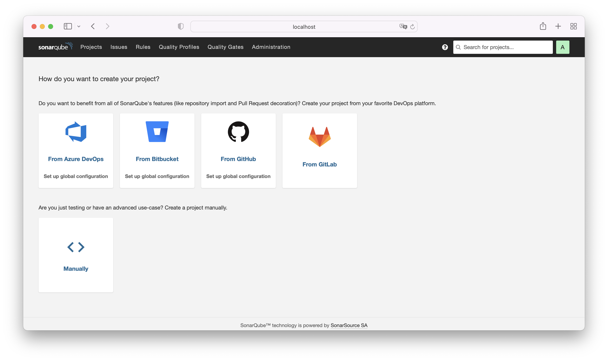 |
输入项目名称和密钥，然后点击“Set Up” 按钮
| 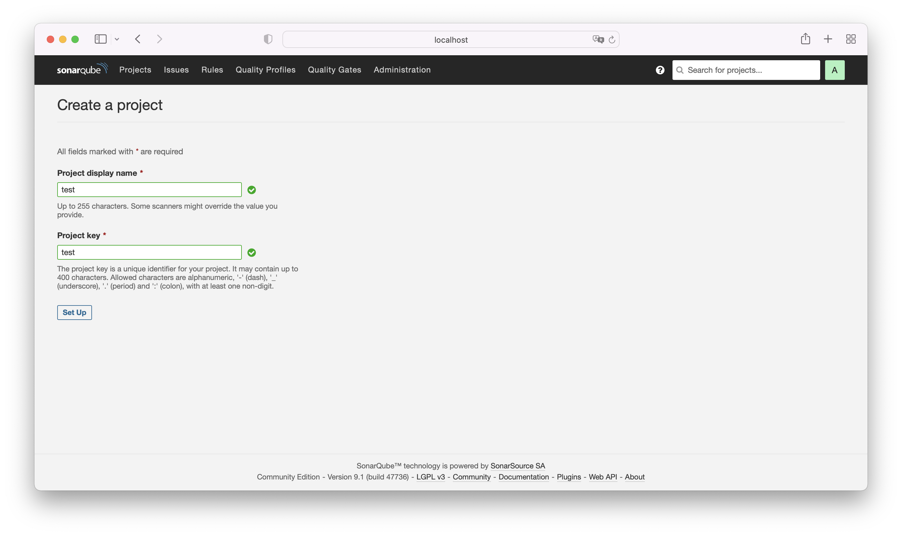 |
点击 "Locally" 分析本地项目
| 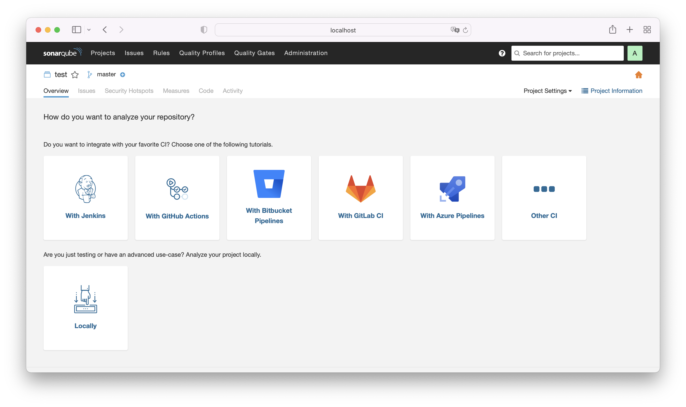 |
输入项目名称，点击“Generate”按钮生成 Token
| 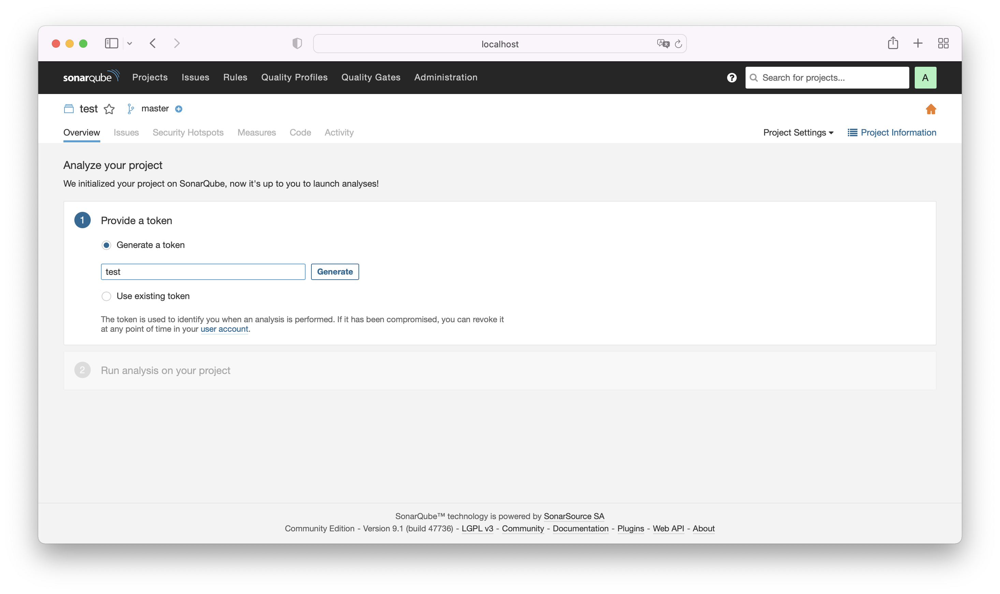 |
将 Token 保存好，然后点击 “Continue” 按钮继续
| 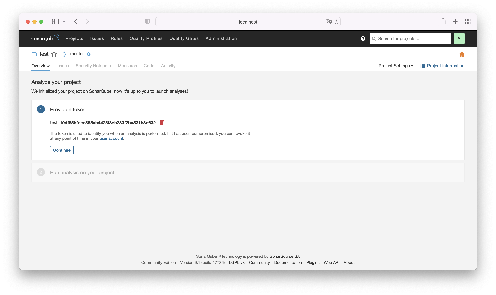 |
选择你的构建方式，我使用的是 Maven
 |
复制 Maven 命令，然后在你的项目下面执行。
| 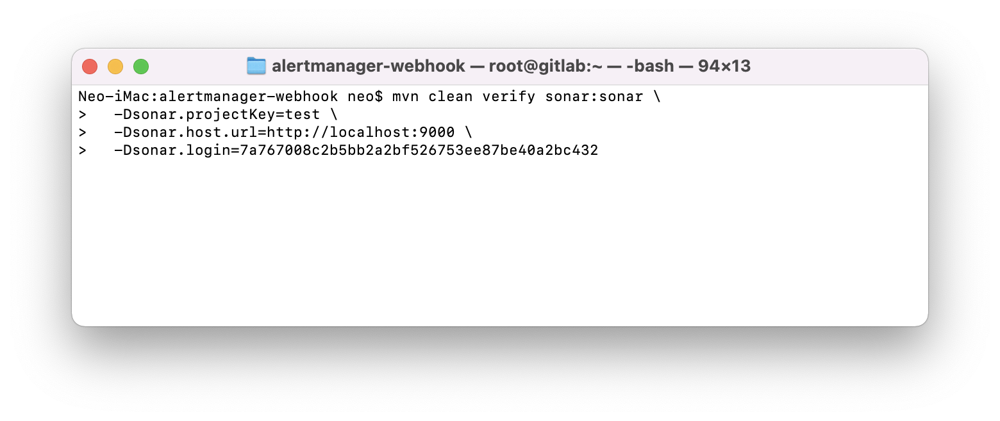 |
mvn clean verify sonar:sonar \ -Dsonar.projectKey=test \ -Dsonar.host.url=http://192.168.30.20:9000 \ -Dsonar.login=e4294feaa6e9f830bdb109a310de6cd59f3a0443
执行会输出下面信息
[INFO] ---------------------< cn.netkiller:alertmanager >---------------------- [INFO] Building alertmanager 0.0.1 [INFO] --------------------------------[ jar ]--------------------------------- [INFO] [INFO] --- sonar-maven-plugin:3.9.0.2155:sonar (default-cli) @ alertmanager --- [INFO] User cache: /Users/neo/.sonar/cache [INFO] SonarQube version: 9.1.0 [INFO] Default locale: "en_CN", source code encoding: "UTF-8" [INFO] Load global settings [INFO] Load global settings (done) | time=199ms [INFO] Server id: 243B8A4D-AXz9icqihL5ZxuJK9yra [INFO] User cache: /Users/neo/.sonar/cache [INFO] Load/download plugins [INFO] Load plugins index [INFO] Load plugins index (done) | time=81ms [INFO] Load/download plugins (done) | time=316ms [INFO] Process project properties [INFO] Process project properties (done) | time=13ms [INFO] Execute project builders [INFO] Execute project builders (done) | time=1ms [INFO] Project key: test [INFO] Base dir: /Users/neo/workspace/alertmanager-webhook [INFO] Working dir: /Users/neo/workspace/alertmanager-webhook/target/sonar [INFO] Load project settings for component key: 'test' [INFO] Load project settings for component key: 'test' (done) | time=58ms [INFO] Load quality profiles [INFO] Load quality profiles (done) | time=203ms [INFO] Load active rules [INFO] Load active rules (done) | time=5861ms [INFO] Indexing files... [INFO] Project configuration: [INFO] 7 files indexed [INFO] 0 files ignored because of scm ignore settings [INFO] Quality profile for java: Sonar way [INFO] Quality profile for xml: Sonar way [INFO] ------------- Run sensors on module alertmanager [INFO] Load metrics repository [INFO] Load metrics repository (done) | time=67ms [INFO] Sensor JavaSensor [java] [INFO] Configured Java source version (sonar.java.source): 17 [INFO] JavaClasspath initialization [INFO] JavaClasspath initialization (done) | time=10ms [INFO] JavaTestClasspath initialization [INFO] JavaTestClasspath initialization (done) | time=1ms [INFO] Java "Main" source files AST scan [INFO] 5 source files to be analyzed [INFO] Load project repositories [INFO] Load project repositories (done) | time=63ms [INFO] 5/5 source files have been analyzed [INFO] Java "Main" source files AST scan (done) | time=2271ms [INFO] Java "Test" source files AST scan [INFO] 1 source file to be analyzed [INFO] 1/1 source file has been analyzed [INFO] Java "Test" source files AST scan (done) | time=41ms [INFO] No "Generated" source files to scan. [INFO] Sensor JavaSensor [java] (done) | time=2833ms [INFO] Sensor CSS Rules [cssfamily] [INFO] No CSS, PHP, HTML or VueJS files are found in the project. CSS analysis is skipped. [INFO] Sensor CSS Rules [cssfamily] (done) | time=1ms [INFO] Sensor JaCoCo XML Report Importer [jacoco] [INFO] 'sonar.coverage.jacoco.xmlReportPaths' is not defined. Using default locations: target/site/jacoco/jacoco.xml,target/site/jacoco-it/jacoco.xml,build/reports/jacoco/test/jacocoTestReport.xml [INFO] No report imported, no coverage information will be imported by JaCoCo XML Report Importer [INFO] Sensor JaCoCo XML Report Importer [jacoco] (done) | time=2ms [INFO] Sensor C# Project Type Information [csharp] [INFO] Sensor C# Project Type Information [csharp] (done) | time=0ms [INFO] Sensor C# Analysis Log [csharp] [INFO] Sensor C# Analysis Log [csharp] (done) | time=55ms [INFO] Sensor C# Properties [csharp] [INFO] Sensor C# Properties [csharp] (done) | time=0ms [INFO] Sensor SurefireSensor [java] [INFO] parsing [/Users/neo/workspace/alertmanager-webhook/target/surefire-reports] [INFO] Sensor SurefireSensor [java] (done) | time=2ms [INFO] Sensor JavaXmlSensor [java] [INFO] 1 source file to be analyzed [INFO] 1/1 source file has been analyzed [INFO] Sensor JavaXmlSensor [java] (done) | time=201ms [INFO] Sensor HTML [web] [INFO] Sensor HTML [web] (done) | time=2ms [INFO] Sensor XML Sensor [xml] [INFO] 1 source file to be analyzed [INFO] 1/1 source file has been analyzed [INFO] Sensor XML Sensor [xml] (done) | time=179ms [INFO] Sensor VB.NET Project Type Information [vbnet] [INFO] Sensor VB.NET Project Type Information [vbnet] (done) | time=14ms [INFO] Sensor VB.NET Analysis Log [vbnet] [INFO] Sensor VB.NET Analysis Log [vbnet] (done) | time=42ms [INFO] Sensor VB.NET Properties [vbnet] [INFO] Sensor VB.NET Properties [vbnet] (done) | time=0ms [INFO] ------------- Run sensors on project [INFO] Sensor Zero Coverage Sensor [INFO] Sensor Zero Coverage Sensor (done) | time=23ms [INFO] Sensor Java CPD Block Indexer [INFO] Sensor Java CPD Block Indexer (done) | time=23ms [INFO] SCM Publisher SCM provider for this project is: git [INFO] SCM Publisher 7 source files to be analyzed [INFO] SCM Publisher 7/7 source files have been analyzed (done) | time=169ms [INFO] CPD Executor 1 file had no CPD blocks [INFO] CPD Executor Calculating CPD for 4 files [INFO] CPD Executor CPD calculation finished (done) | time=7ms [INFO] Analysis report generated in 56ms, dir size=142.8 kB [INFO] Analysis report compressed in 60ms, zip size=34.4 kB [INFO] Analysis report uploaded in 121ms [INFO] ------------- Check Quality Gate status [INFO] Waiting for the analysis report to be processed (max 300s) [INFO] QUALITY GATE STATUS: PASSED - View details on http://localhost:9000/dashboard?id=test [INFO] Analysis total time: 23.392 s [INFO] ------------------------------------------------------------------------ [INFO] BUILD SUCCESS [INFO] ------------------------------------------------------------------------ [INFO] Total time: 01:15 min [INFO] Finished at: 2021-11-08T15:21:59+08:00 [INFO] ------------------------------------------------------------------------
Maven 执行完成之后 SonarQube 会自动展示分析结果
| 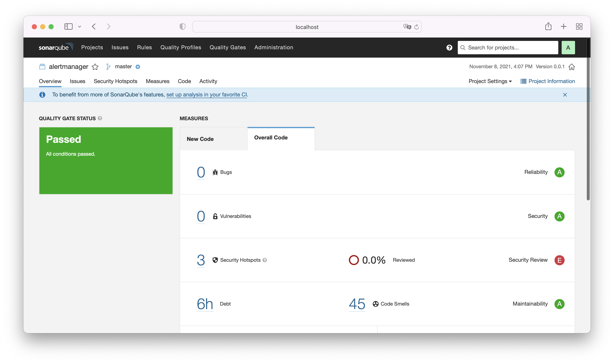 |
这种方式需要手工执行 Maven，每次都需要指定三个参数，-Dsonar.projectKey=test -Dsonar.host.url=http://192.168.30.20:9000 -Dsonar.login=e4294feaa6e9f830bdb109a310de6cd59f3a0443，有没有更好的解决方案呢？
我们可以将这些参数写入到 setting.xml / pom.xml 文件，方法如下：
project/build/plugins 下面增加 sonar-maven-plugin
<plugin> <groupId>org.sonarsource.scanner.maven</groupId> <artifactId>sonar-maven-plugin</artifactId> <version>3.9.0.2155</version> </plugin>
project/profiles 下面增加 sonar，profile 有两种写法，一种是使用用户名和密码，另一种是使用token
<profile> <id>sonar</id> <activation> <activeByDefault>true</activeByDefault> </activation> <properties> <!-- Optional URL to server. Default value is http://localhost:9000 --> <sonar.host.url>http://localhost:9000</sonar.host.url> <sonar.login>admin</sonar.login> <sonar.password>your_password</sonar.password> <!-- <sonar.inclusions>**/*.java,**/*.xml</sonar.inclusions> --> <!-- <sonar.exclusions>**/cn/netkiller/test/*</sonar.exclusions> --> </properties> </profile> <profile> <id>sonar</id> <activation> <activeByDefault>true</activeByDefault> </activation> <properties> <!-- Optional URL to server. Default value is http://localhost:9000 --> <sonar.host.url>http://localhost:9000</sonar.host.url> <sonar.login>510966107d69cd32448fcc4372d1383e8d21092b</sonar.login> <sonar.password></sonar.password> </properties> </profile>
配置完成之后使用 mvn verify sonar:sonar 测试
Neo-iMac:microservice neo$ mvn verify sonar:sonar -Dmaven.test.skip=true
下面是完整的例子
例 3.1. SonarQube pom.xml 配置
<?xml version="1.0" encoding="UTF-8"?>
<project xmlns="http://maven.apache.org/POM/4.0.0" xmlns:xsi="http://www.w3.org/2001/XMLSchema-instance" xsi:schemaLocation="http://maven.apache.org/POM/4.0.0 http://maven.apache.org/xsd/maven-4.0.0.xsd">
<modelVersion>4.0.0</modelVersion>
<groupId>cn.netkiller</groupId>
<artifactId>microservice</artifactId>
<version>0.0.1-SNAPSHOT</version>
<packaging>pom</packaging>
<name>microservice</name>
<url>http://www.netkiller.cn</url>
<description>Demo project for Spring Boot</description>
<organization>
<name>Netkiller Spring Cloud 手札</name>
<url>http://www.netkiller.cn</url>
</organization>
<developers>
<developer>
<name>Neo</name>
<email>netkiller@msn.com</email>
<organization>Netkiller Spring Cloud 手札</organization>
<organizationUrl>http://www.netkiller.cn</organizationUrl>
<roles>
<role>Author</role>
</roles>
</developer>
</developers>
<properties>
<project.build.sourceEncoding>UTF-8</project.build.sourceEncoding>
<project.reporting.outputEncoding>UTF-8</project.reporting.outputEncoding>
<java.version>17</java.version>
<maven.compiler.source>${java.version}</maven.compiler.source>
<maven.compiler.target>${java.version}</maven.compiler.target>
<maven.compiler.release>${java.version}</maven.compiler.release>
<spring-boot.version>2.4.0.RELEASE</spring-boot.version>
<spring-cloud.version>2020.0.4</spring-cloud.version>
<!-- <docker.registry>127.0.0.1:5000</docker.registry> -->
<docker.registry>registry.netkiller.cn:5000</docker.registry>
<docker.registry.name>netkiller</docker.registry.name>
<docker.image.prefix>netkiller</docker.image.prefix>
<docker.image>mcr.microsoft.com/java/jre:15-zulu-alpine</docker.image>
</properties>
<repositories>
<repository>
<id>alimaven</id>
<name>Maven Aliyun Mirror</name>
<url>http://maven.aliyun.com/nexus/content/repositories/central/</url>
<releases>
<enabled>true</enabled>
</releases>
<snapshots>
<enabled>false</enabled>
</snapshots>
</repository>
</repositories>
<parent>
<groupId>org.springframework.boot</groupId>
<artifactId>spring-boot-starter-parent</artifactId>
<version>2.5.6</version>
<relativePath />
</parent>
<dependencyManagement>
<dependencies>
<dependency>
<groupId>org.springframework.cloud</groupId>
<artifactId>spring-cloud-dependencies</artifactId>
<version>${spring-cloud.version}</version>
<type>pom</type>
<scope>import</scope>
</dependency>
</dependencies>
</dependencyManagement>
<dependencies>
<dependency>
<groupId>org.springframework.boot</groupId>
<artifactId>spring-boot-starter-actuator</artifactId>
</dependency>
<dependency>
<groupId>org.springframework.boot</groupId>
<artifactId>spring-boot-starter-test</artifactId>
<scope>test</scope>
</dependency>
<dependency>
<groupId>junit</groupId>
<artifactId>junit</artifactId>
<scope>test</scope>
</dependency>
<dependency>
<groupId>org.projectlombok</groupId>
<artifactId>lombok</artifactId>
</dependency>
</dependencies>
<modules>
<module>eureka</module>
<module>gateway</module>
<module>config</module>
<module>webflux</module>
<module>openfeign</module>
<module>restful</module>
<module>sleuth</module>
<module>oauth2</module>
<module>welcome</module>
<module>test</module>
<module>aliyun</module>
</modules>
<profiles>
<profile>
<id>dev</id>
<properties>
<profiles.active>dev</profiles.active>
</properties>
<activation>
<activeByDefault>true</activeByDefault>
</activation>
</profile>
<profile>
<id>prod</id>
<properties>
<profiles.active>prod</profiles.active>
</properties>
</profile>
<profile>
<id>test</id>
<properties>
<profiles.active>test</profiles.active>
</properties>
</profile>
<profile>
<id>sonar</id>
<activation>
<activeByDefault>true</activeByDefault>
</activation>
<properties>
<!-- Optional URL to server. Default value is http://localhost:9000 -->
<sonar.host.url>http://localhost:9000</sonar.host.url>
<sonar.login>admin</sonar.login>
<sonar.password>******</sonar.password>
<!-- <sonar.inclusions>**/*.java,**/*.xml</sonar.inclusions> -->
<!-- <sonar.exclusions>**/cn/netkiller/test/*</sonar.exclusions> -->
</properties>
</profile>
</profiles>
<build>
<plugins>
<plugin>
<artifactId>maven-surefire-plugin</artifactId>
<configuration>
<skip>true</skip>
</configuration>
</plugin>
<plugin>
<groupId>org.sonarsource.scanner.maven</groupId>
<artifactId>sonar-maven-plugin</artifactId>
<version>3.9.0.2155</version>
</plugin>
<plugin>
<groupId>org.jacoco</groupId>
<artifactId>jacoco-maven-plugin</artifactId>
<version>0.8.7</version>
<executions>
<execution>
<goals>
<goal>prepare-agent</goal>
</goals>
</execution>
<execution>
<id>report</id>
<phase>test</phase>
<goals>
<goal>report</goal>
</goals>
</execution>
</executions>
</plugin>
</plugins>
</build>
</project>
创建项目
| 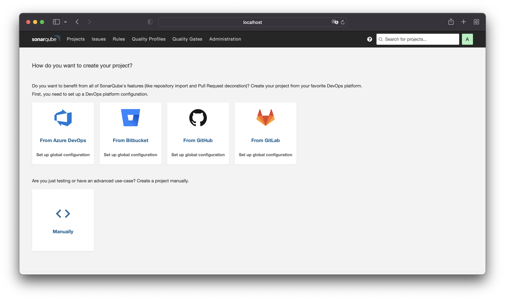 |
选择 “From GitLab”，现在切换到 Gitlab，进入用户设置
| 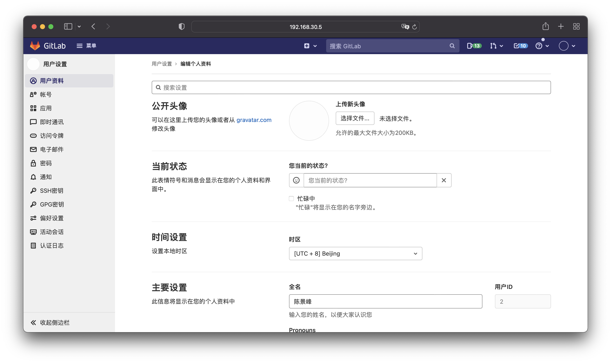 |
选择访问令牌
| 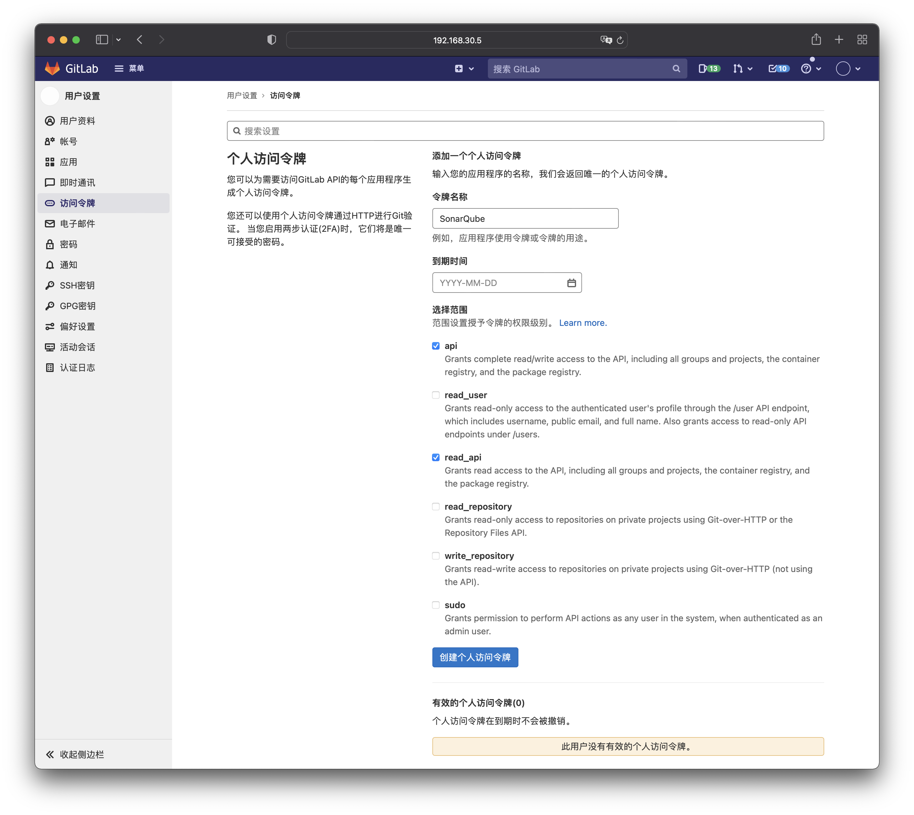 |
输入令牌名称，勾选 api 和 read_api，最后点击“创建个人访问令牌”按钮
| 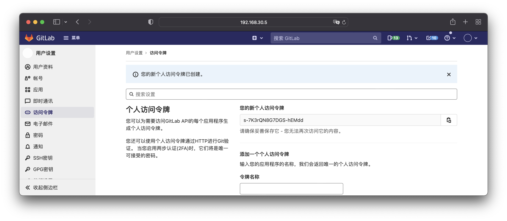 |
复制“您的新个人访问令牌”
| 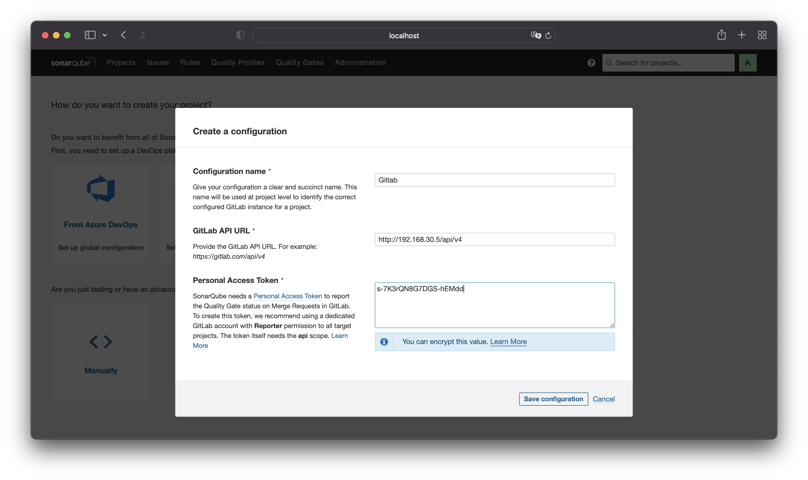 |
回到 SonarQube，输入配置名称 Configuration name，GitLab API URL和Personal Access Token (Gitlab 中创建的个人访问令牌)
| 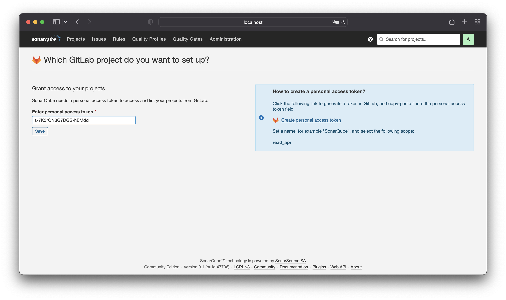 |
再次输入个人访问令牌
| 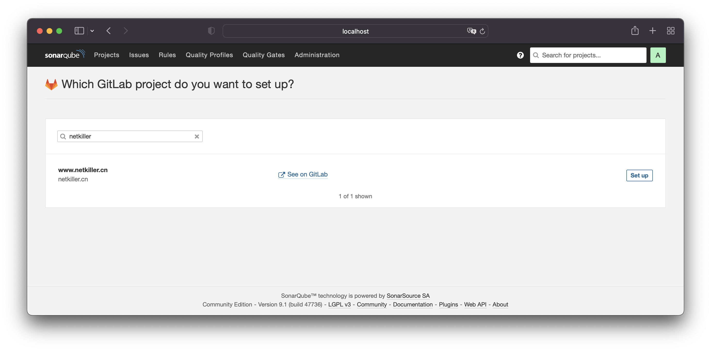 |
如果令牌正确，将会看到 Gitlab 那边的项目列表，如果项目很多，可以在查询框内输入关键字查找，选择你需要扫描的项目，点击“Set up” 按钮
| 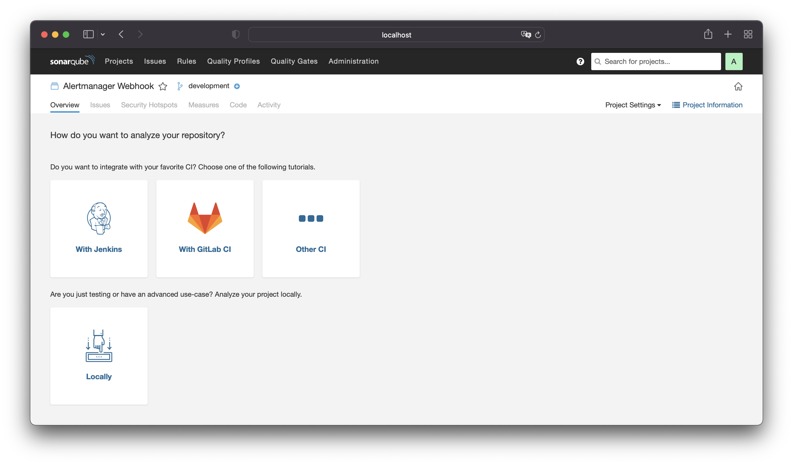 |
选择 With GitLab CI
| 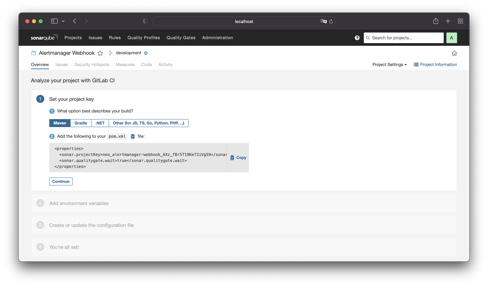 |
选择 Maven，复制配置项，添加到 Maven 的 pom.xml 中，配置类似下面
<?xml version="1.0" encoding="UTF-8"?> <project xmlns="http://maven.apache.org/POM/4.0.0" xmlns:xsi="http://www.w3.org/2001/XMLSchema-instance" xsi:schemaLocation="http://maven.apache.org/POM/4.0.0 http://maven.apache.org/xsd/maven-4.0.0.xsd"> <modelVersion>4.0.0</modelVersion> <groupId>com.example</groupId> <artifactId>demo</artifactId> <version>0.0.1-SNAPSHOT</version> <packaging>jar</packaging> <name>demo</name> <description>Demo project for Spring Boot</description> <parent> <groupId>org.springframework.boot</groupId> <artifactId>spring-boot-starter-parent</artifactId> <version>2.0.1.RELEASE</version> <relativePath/> <!-- lookup parent from repository --> </parent> <properties> <project.build.sourceEncoding>UTF-8</project.build.sourceEncoding> <project.reporting.outputEncoding>UTF-8</project.reporting.outputEncoding> <java.version>1.8</java.version> <sonar.projectKey>api.netkiller.cn_AXz_oa0aOCAK34bOh_gg</sonar.projectKey> <sonar.qualitygate.wait>true</sonar.qualitygate.wait> </properties> <dependencies> <dependency> <groupId>org.springframework.boot</groupId> <artifactId>spring-boot-starter-web</artifactId> </dependency> <dependency> <groupId>org.springframework.boot</groupId> <artifactId>spring-boot-starter-test</artifactId> <scope>test</scope> </dependency> </dependencies> <build> <plugins> <plugin> <groupId>org.springframework.boot</groupId> <artifactId>spring-boot-maven-plugin</artifactId> </plugin> </plugins> </build> </project>
| 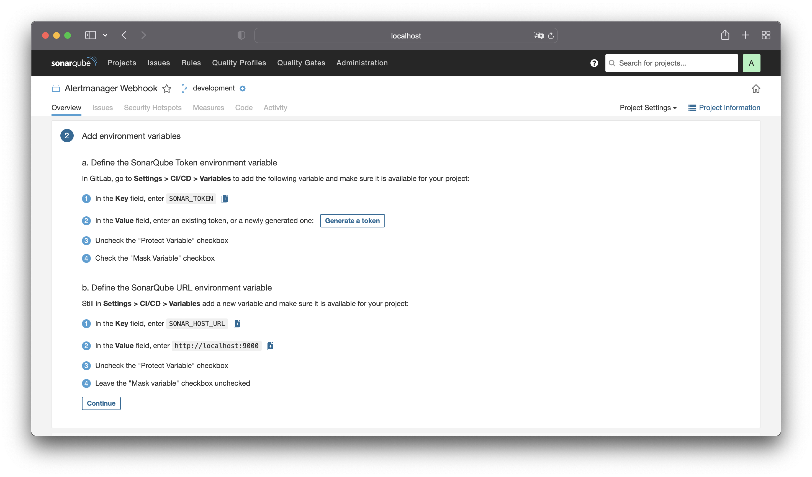 |
配置 Gitlab 环境变量，点击 “Generate a token” 按钮，生成 SONAR_TOKEN
| 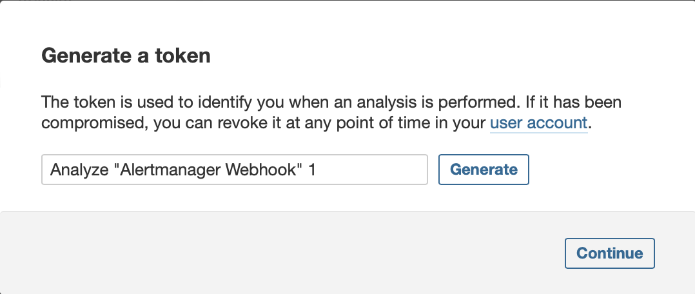 |
点击 “Generate” 按钮
| 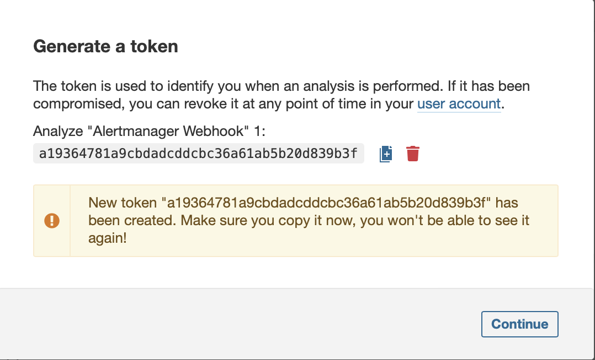 |
点击加号“➕”图标复制SONAR_TOKEN
现在切换到 Gitlab 窗口，进入项目 - 设置 - CI/CD，展开 “变量”
| 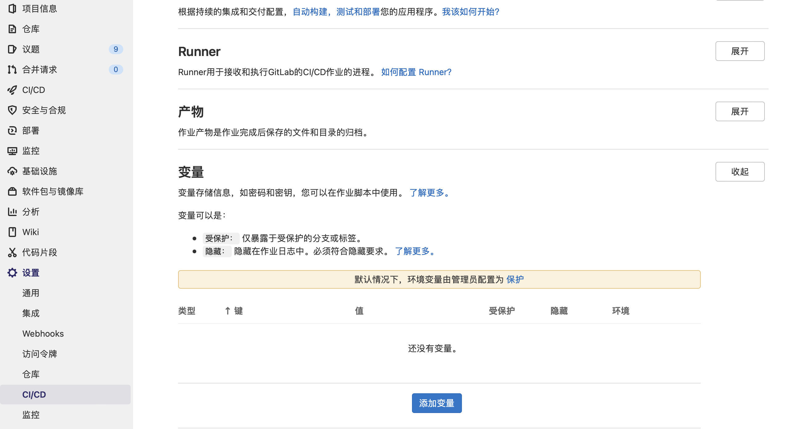 |
点击 “添加变量” 按钮，从 SonarQube 窗口复制并添加变量 SONAR_TOKEN 和 SONAR_HOST_URL
| 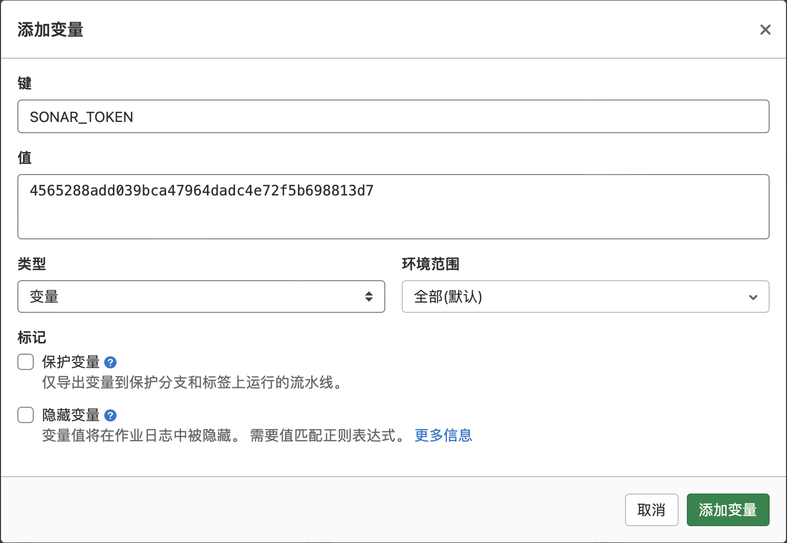 |
添加完成后，点击 “显示值” 按钮，检查变量是否正确
| 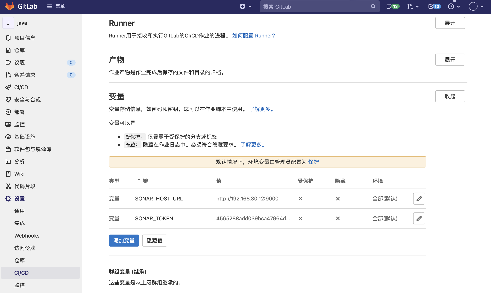 |
点击即 “Continue” 按钮
| 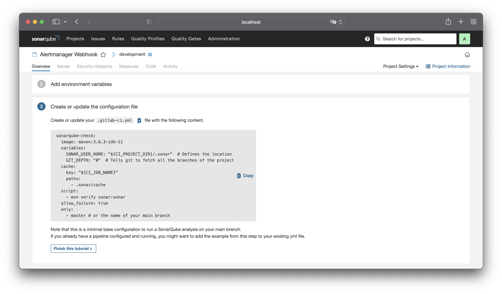 |
复制内容，并添加到 .gitlab-ci.yml 文件中
![[提示]](/graphics/tip.png) | 提示 |
|---|---|
| 注意：你的项目必须使用 Java 11 以上的版本，否则会出错，具体请看 FAQ 章节。 |
所有工作完成之后，点击 “Finish this tutorial” 按钮，SonarQube 窗口放在那里不用管它。
现在提交和推送代码，然后盯着流水线，如果不出错，SonarQube 就会生成下面这样的报告
| 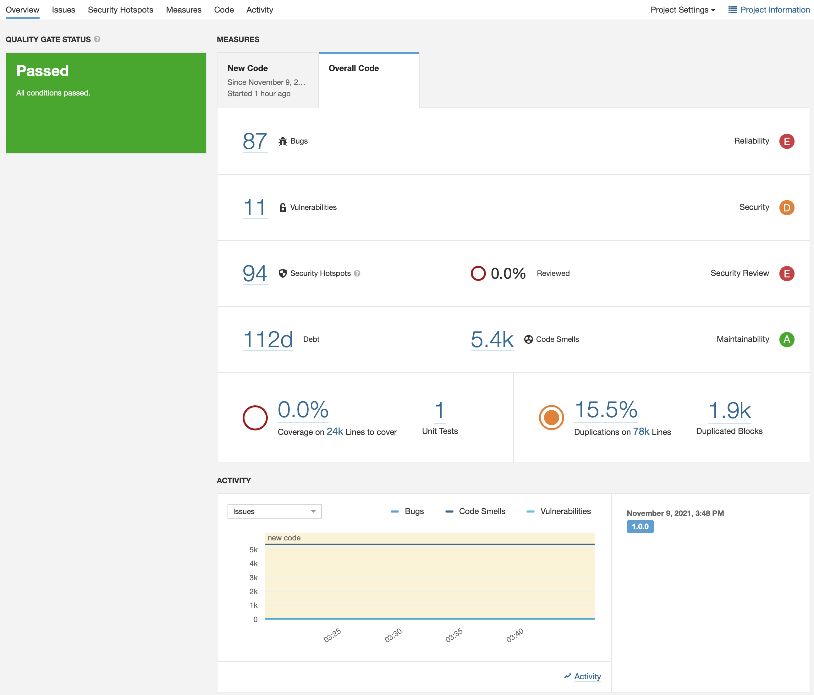 |
sonar-scanner \ -Dsonar.projectKey=aabbcc \ -Dsonar.sources=. \ -Dsonar.host.url=http://localhost:9000 \ -Dsonar.login=161e6f54add09c966518fa45d2860bad3ebf9774
https://www.npmjs.com/package/sonarqube-scanner
创建 sonar.js 文件
const sonarqubeScanner = require('sonarqube-scanner');
sonarqubeScanner({
serverUrl: 'http://192.168.30.20:9000',
token: '880300b52817bae1fe26de51fb36b6da47c40edd',
options : {
'sonar.projectName': 'admin.netkiller.cn',
'sonar.sources': '.',
'sonar.inclusions' : 'src/**'
},
}, () => {});
package.json
{
"name": "netkiller",
"version": "1.0.0",
"description": "http://www.netkiller.cn",
"author": "Neo Chen",
"license": "MIT",
"scripts": {
"sonar": "node sonar.js"
},
"dependencies": {
"sonarqube-scanner": "^2.8.1"
}
}
[gitlab-runner@gitlab admin.netkiller.cn]$ npm run sonar > netkiller@2.3.0 sonar /home/gitlab-runner/admin.netkiller.cn > node sonar.js [18:39:26] Starting analysis... [18:39:26] Getting info from "package.json" file [18:39:26] Checking if executable exists: /home/gitlab-runner/.sonar/native-sonar-scanner/sonar-scanner-4.5.0.2216-linux/bin/sonar-scanner [18:39:26] Platform binaries for SonarScanner found. Using it. INFO: Scanner configuration file: /home/gitlab-runner/.sonar/native-sonar-scanner/sonar-scanner-4.5.0.2216-linux/conf/sonar-scanner.properties INFO: Project root configuration file: NONE INFO: SonarScanner 4.5.0.2216 INFO: Java 11.0.3 AdoptOpenJDK (64-bit) INFO: Linux 4.18.0-338.el8.x86_64 amd64 INFO: User cache: /home/gitlab-runner/.sonar/cache INFO: Scanner configuration file: /home/gitlab-runner/.sonar/native-sonar-scanner/sonar-scanner-4.5.0.2216-linux/conf/sonar-scanner.properties INFO: Project root configuration file: NONE INFO: Analyzing on SonarQube server 9.1.0 INFO: Default locale: "en_US", source code encoding: "US-ASCII" (analysis is platform dependent) INFO: Load global settings INFO: Load global settings (done) | time=126ms INFO: Server id: 243B8A4D-AXz-jVsGB3jmSUHEudyb INFO: User cache: /home/gitlab-runner/.sonar/cache INFO: Load/download plugins INFO: Load plugins index INFO: Load plugins index (done) | time=64ms INFO: Load/download plugins (done) | time=120ms INFO: Process project properties INFO: Process project properties (done) | time=8ms INFO: Execute project builders INFO: Execute project builders (done) | time=1ms INFO: Project key: netkiller INFO: Base dir: /home/gitlab-runner/admin.netkiller.cn INFO: Working dir: /home/gitlab-runner/admin.netkiller.cn/.scannerwork INFO: Load project settings for component key: 'netkiller' INFO: Load project settings for component key: 'netkiller' (done) | time=72ms INFO: Load quality profiles INFO: Load quality profiles (done) | time=216ms INFO: Load active rules INFO: Load active rules (done) | time=4596ms INFO: Indexing files... INFO: Project configuration: INFO: Included sources: src/** INFO: Excluded sources: node_modules/**, bower_components/**, jspm_packages/**, typings/**, lib-cov/** INFO: Load project repositories INFO: Load project repositories (done) | time=71ms INFO: 460 files indexed INFO: 889 files ignored because of inclusion/exclusion patterns INFO: 0 files ignored because of scm ignore settings INFO: Quality profile for css: Sonar way INFO: Quality profile for js: Sonar way INFO: ------------- Run sensors on module admin.netkiller.cn INFO: Load metrics repository INFO: Load metrics repository (done) | time=48ms INFO: Sensor CSS Metrics [cssfamily] INFO: Sensor CSS Metrics [cssfamily] (done) | time=109ms INFO: Sensor CSS Rules [cssfamily] INFO: 203 source files to be analyzed INFO: 203/203 source files have been analyzed INFO: Sensor CSS Rules [cssfamily] (done) | time=2819ms INFO: Sensor JaCoCo XML Report Importer [jacoco] INFO: 'sonar.coverage.jacoco.xmlReportPaths' is not defined. Using default locations: target/site/jacoco/jacoco.xml,target/site/jacoco-it/jacoco.xml,build/reports/jacoco/test/jacocoTestReport.xml INFO: No report imported, no coverage information will be imported by JaCoCo XML Report Importer INFO: Sensor JaCoCo XML Report Importer [jacoco] (done) | time=4ms INFO: Sensor JavaScript analysis [javascript] WARN: You are using Node.js version 10, which reached end-of-life. Support for this version will be dropped in future release, please upgrade Node.js to more recent version. INFO: 304 source files to be analyzed INFO: 30/304 files analyzed, current file: src/views/fcms/LoanIn/ScreenCustomers/index.vue INFO: 87/304 files analyzed, current file: src/views/fcms/confingManage/warnConfig/index.vue INFO: 153/304 files analyzed, current file: src/views/tdms/components/BusinessRisk.vue INFO: 211/304 files analyzed, current file: src/views/fcms/LoanIn/LoanModel/modal.vue INFO: 275/304 files analyzed, current file: src/views/system/post/index.vue INFO: 304/304 source files have been analyzed INFO: Sensor JavaScript analysis [javascript] (done) | time=57807ms INFO: Sensor TypeScript analysis [javascript] INFO: No input files found for analysis INFO: Sensor TypeScript analysis [javascript] (done) | time=7ms INFO: Sensor C# Project Type Information [csharp] INFO: Sensor C# Project Type Information [csharp] (done) | time=1ms INFO: Sensor C# Analysis Log [csharp] INFO: Sensor C# Analysis Log [csharp] (done) | time=9ms INFO: Sensor C# Properties [csharp] INFO: Sensor C# Properties [csharp] (done) | time=0ms INFO: Sensor JavaXmlSensor [java] INFO: Sensor JavaXmlSensor [java] (done) | time=2ms INFO: Sensor HTML [web] INFO: Sensor HTML [web] (done) | time=479ms INFO: Sensor VB.NET Project Type Information [vbnet] INFO: Sensor VB.NET Project Type Information [vbnet] (done) | time=3ms INFO: Sensor VB.NET Analysis Log [vbnet] INFO: Sensor VB.NET Analysis Log [vbnet] (done) | time=13ms INFO: Sensor VB.NET Properties [vbnet] INFO: Sensor VB.NET Properties [vbnet] (done) | time=0ms INFO: ------------- Run sensors on project INFO: Sensor Zero Coverage Sensor INFO: Sensor Zero Coverage Sensor (done) | time=68ms INFO: CPD Executor 16 files had no CPD blocks INFO: CPD Executor Calculating CPD for 288 files INFO: CPD Executor CPD calculation finished (done) | time=269ms INFO: Analysis report generated in 127ms, dir size=4.0 MB INFO: Analysis report compressed in 400ms, zip size=1.7 MB INFO: Analysis report uploaded in 792ms INFO: ANALYSIS SUCCESSFUL, you can browse http://192.168.30.20:9000/dashboard?id=netkiller INFO: Note that you will be able to access the updated dashboard once the server has processed the submitted analysis report INFO: More about the report processing at http://192.168.30.20:9000/api/ce/task?id=AX0ESRKaT19KeT2iVgTn INFO: Analysis total time: 1:20.455 s INFO: ------------------------------------------------------------------------ INFO: EXECUTION SUCCESS INFO: ------------------------------------------------------------------------ INFO: Total time: 1:21.380s INFO: Final Memory: 13M/50M INFO: ------------------------------------------------------------------------